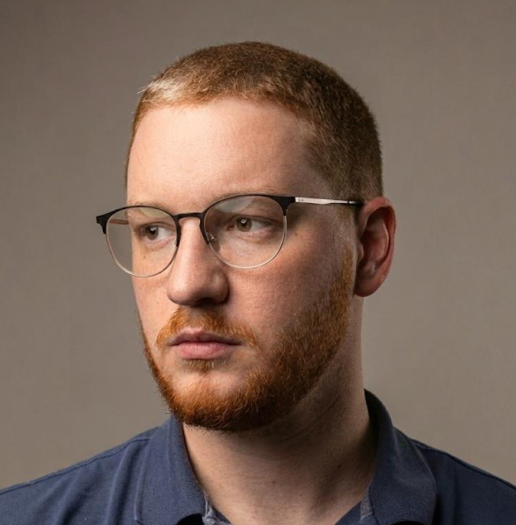
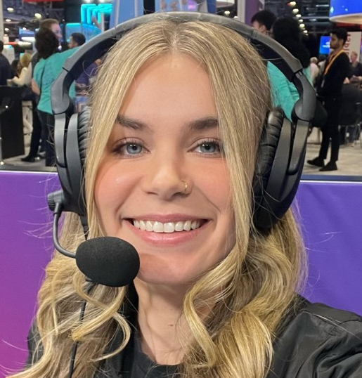
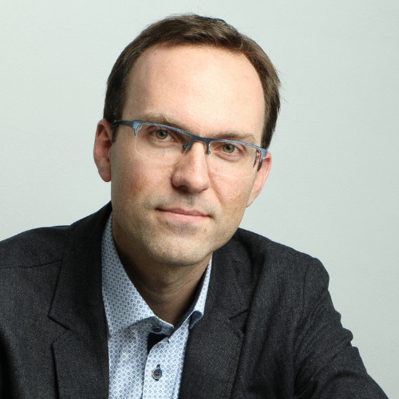
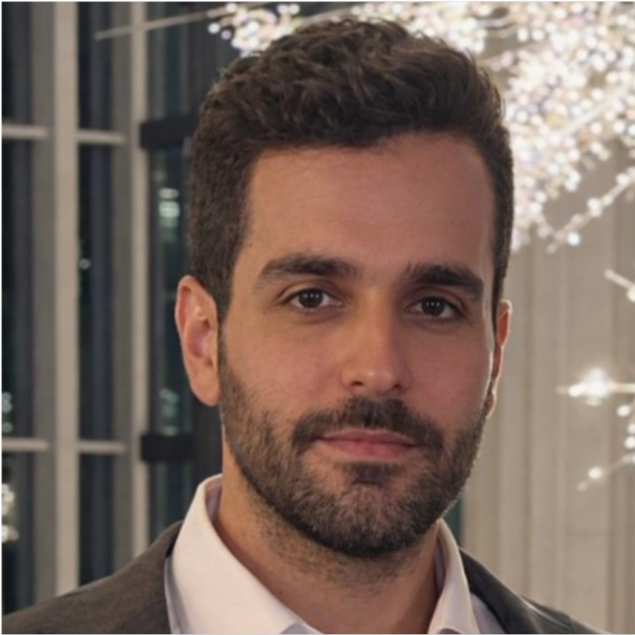
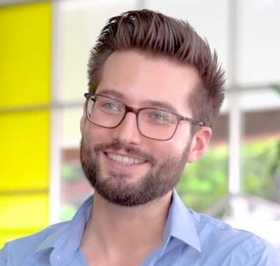
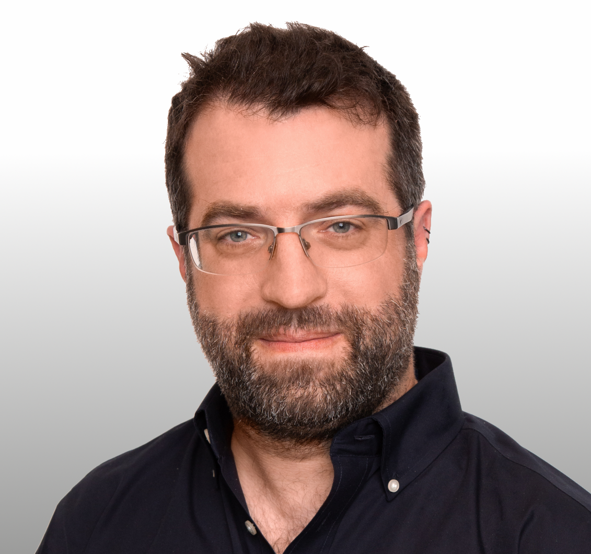

A non-profit community of engineers, founders, and practitioners building AI that creates genuine value — for people, organizations, and society. Une communauté à but non lucratif d'ingénieurs, de fondateurs et de praticiens construisant une IA qui crée une véritable valeur — pour les individus, les organisations et la société.
generative.build is not a conference series or a Slack group. It's an operating system for the builders who believe AI must earn its place through impact — not hype. generative.build n'est pas une série de conférences ou un groupe Slack. C'est un système d'exploitation pour les bâtisseurs qui croient que l'IA doit gagner sa place par son impact — et non par le battage médiatique (hype).
We connect practitioners doing real work: sharing code, failures, lessons, and prototypes. Every event, conversation, and collaboration returns to a single standard — does this create real benefit? Nous connectons des praticiens qui font un travail réel : partager du code, des échecs, des leçons et des prototypes. Chaque événement, conversation et collaboration ramène à une seule exigence — est-ce que cela crée un bénéfice réel ?
Four principles that govern every decision, event, and collaboration in this community.Quatre principes qui régissent chaque décision, événement et collaboration au sein de cette communauté.
AI must serve people first. We promote ethical, responsible systems that improve well-being, opportunity, and dignity. Technology is not the goal — human progress is.L'IA doit d'abord servir les gens. Nous promouvons des systèmes éthiques et responsables qui améliorent le bien-être, les opportunités et la dignité. La technologie n'est pas le but — le progrès humain l'est.
This is a participatory community. Everyone learns and contributes back. Share knowledge, ideas, tools, and experience — the network strengthens when members help each other grow.C'est une communauté participative. Chacun apprend et redonne. Partagez vos connaissances, idées, outils et expériences — le réseau se renforce quand les membres s'entraident pour grandir.
We value builders who turn ideas into real outcomes. Experimentation, prototypes, and working systems over theory and hype. Show what you build, share what you learn.Nous valorisons les bâtisseurs qui transforment des idées en résultats. L'expérimentation, les prototypes et les systèmes fonctionnels priment sur la théorie et le battage médiatique. Montrez ce que vous construisez, partagez ce que vous apprenez.
Our direction follows our mission, not external influence. Sponsors support the ecosystem — they don't control the agenda. Decisions stay guided by our core values.Notre direction suit notre mission, pas les influences externes. Les commanditaires soutiennent l'écosystème — ils ne contrôlent pas l'agenda. Les décisions restent guidées par nos valeurs fondamentales.
In 2024, I launched Generative Build Foundation with a simple idea: to create a space to share experiments and insights on the emerging wave of generative AI. En 2024, j’ai lancé la Fondation Generative Build avec une idée simple : créer un espace pour partager, avec mes pairs, ce que je voyais émerger et les expérimentations que je menais autour de cette nouvelle vague qu’est l’IA générative.
Our founder Farid simply wanted to open the conversation here in Montréal. With early support from Jean-François René, who hosted the very first event at Scalepad, the initiative quickly took root.
Today, it has grown into a community of over 1,300 people. What started as an urge to share has become a movement of builders, practitioners, and leaders developing AI that is useful, concrete, and deeply human — putting Montréal on the generative AI map and shaping conversations with key decision-makers.
Au tout début, je n’avais pas vraiment de tribune, mais j’avais la conviction qu’il fallait ouvrir la conversation ici, à Montréal. Dès les premiers pas, Jean-François René a cru au projet et a accueilli notre tout premier événement chez Scalepad.
Aujourd’hui, cette initiative est devenue une communauté de plus de 1300 personnes. Ce qui était au départ un élan de partage est devenu un véritable mouvement de bâtisseurs, de praticiens et de leaders qui veulent développer une IA utile, concrète et profondément humaine. Mon ambition était de mettre Montréal sur la map de l’IA générative — et la croissance de la communauté, ainsi que les échanges que nous avons maintenant avec des décideurs, montrent que cette vision prend vie.
Practitioners with real production experience — not slides about AI, but the real stories behind building it.Des praticiens avec une réelle expérience de production — pas de présentations théoriques sur l'IA, mais les vraies histoires derrière sa construction.

Architect of one of the world's leading AI agent platforms — enabling production-grade LLM-powered chatbots and agents at scale.Architecte de l'une des principales plateformes d'agents IA au monde — permettant la création de chatbots et d'agents alimentés par des LLM à grande échelle et de niveau production.

15+ years in cloud and software engineering, helping developers adopt AWS services through hands-on demos and real-world architectures.Plus de 15 ans en cloud et ingénierie logicielle, aidant les développeurs à adopter les services AWS grâce à des démonstrations pratiques et des architectures du monde réel.

Full-stack tech entrepreneur, international speaker, and chief architect of the StreamingFast suite. Co-founder of multiple successful startups.Entrepreneur tech full-stack, conférencier international et architecte en chef de la suite StreamingFast. Co-fondateur de multiples startups à succès.
Engineer turned founder — launched three data and AI startups, and now builds tools that make AI a practical force multiplier for every business.Ingénieur devenu fondateur — a lancé trois startups en données et IA, et construit maintenant des outils qui font de l'IA un véritable multiplicateur de force pratique pour chaque entreprise.

Staff engineer turned founder, building runtime observability and security for AI agents — making intelligent systems safer in production.Ingénieur principal devenu fondateur, développant l'observabilité et la sécurité d'exécution pour les agents IA — rendant les systèmes intelligents plus sûrs en production.

Human-robot interaction PhD. Former humanoid robotics lead at 1X. Now building personal AI — focused on individual intelligence, not generic models.Doctorat en interaction humain-robot. Ancien responsable de la robotique humanoïde chez 1X. Construit maintenant une IA personnelle — axée sur l'intelligence individuelle, et non sur des modèles génériques.
Practitioners with decades of combined experience, united by a commitment to ethical, impactful AI.Des praticiens avec des décennies d'expérience combinée, unis par un engagement envers une IA éthique et impactante.
30 years in tech, 15 AI keynotes. Helps organizations navigate the AI landscape with clarity and strategic intent.30 ans dans la tech, 15 conférences (keynotes) sur l'IA. Aide les organisations à naviguer dans le paysage de l'IA avec clarté et intention stratégique.
GTM strategist and executive coach specializing in global market entry, strategic partnerships, and tech sales leadership.Stratège GTM et coach exécutive spécialisée dans l'entrée sur les marchés mondiaux, les partenariats stratégiques et le leadership des ventes technologiques.

Former CTO at ScalePad. Founder and platform engineering leader helping businesses scale operations with AI systems.Ancien CTO chez ScalePad. Fondateur et leader en ingénierie de plateformes aidant les entreprises à faire évoluer leurs opérations avec des systèmes d'IA.
The community is growing. So is the platform that supports it.La communauté grandit. Tout comme la plateforme qui la soutient.
Watch our speaker events live, wherever you are — no ticket required.Regardez nos événements en direct, où que vous soyez — aucun billet requis.
Extending the community beyond Montréal with fully virtual speaker sessions and workshops.Étendre la communauté au-delà de Montréal avec des sessions de conférenciers et des ateliers entièrement virtuels.
A dedicated space for async discussion, resource sharing, and collaboration between members.Un espace dédié pour les discussions asynchrones, le partage de ressources et la collaboration entre les membres.